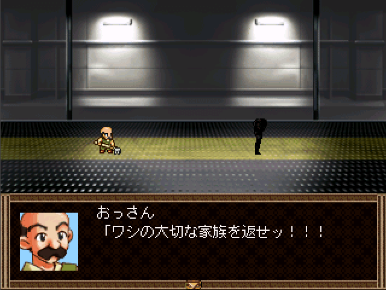

家族の魔法

◇DL(0.00MB)◇
◇感想◇
術者名◇
おじいちょん味塩
魔具◇
2000
コメント◇
だらしないおじさんの切ない冒険物語
マスターから◇
[死亡フラグ測定v1.02] 検索対象：ワシの大切な家族を返せ
ワード：ワシ 家族 返せ
[主人公が使用]目標達成率 80% 死亡率 65% 家族助けた後姿を見せれば死なない
[敵が使用]目標達成率 0% 死亡率 80% もう遅い
[モブが使用]目標達成率 30% 死亡率 99% だいたい死ぬ
さて、どうなることやら……
TOPへ